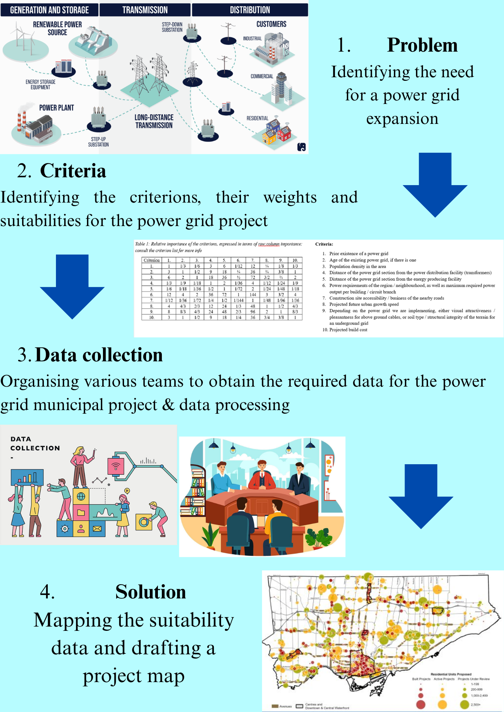
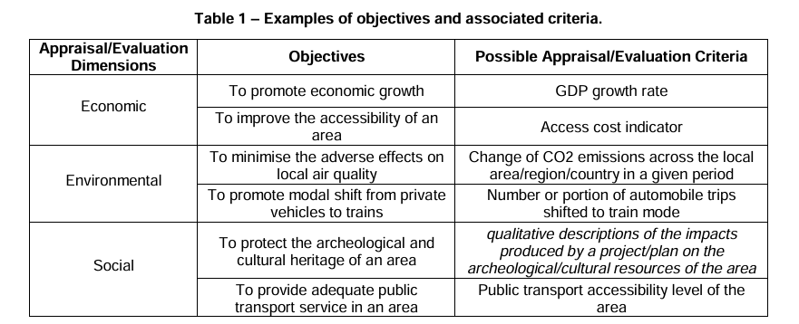
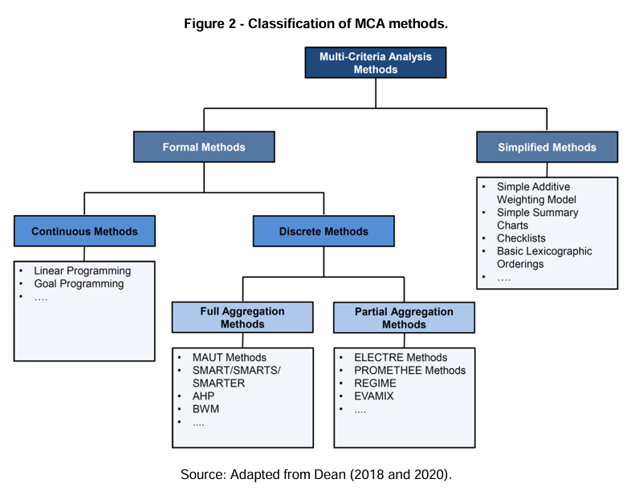
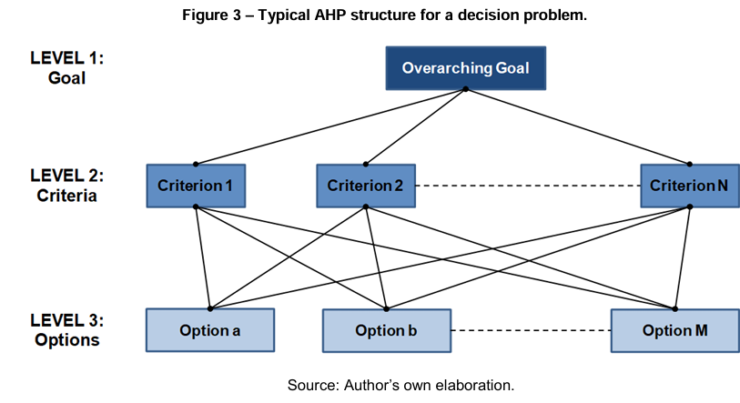
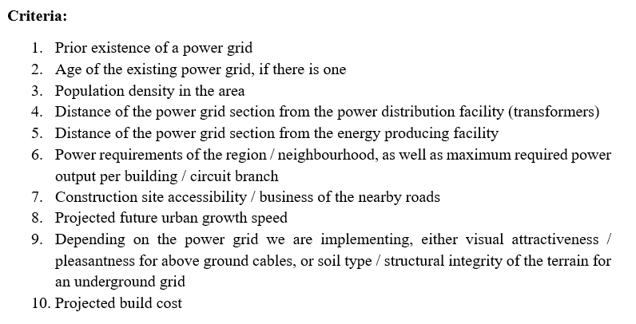
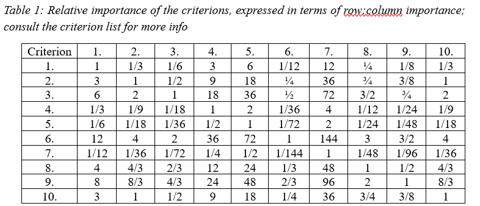

Multicriteria analysis (MCA) was researched and explained in this project. Then, it was applied to a hypothetical situation of a city having to carry out a municipality project of revamping their power grid system, and different criterions were analyzed and discussed. A brief graphic poster was created to represent the key steps of this hypothetical problem, but as a municipal project, the main form of communication would likely be via text documents, so more care was placed on that aspect.

Multicriteria analysis (MCA) is a method of appraisal and evaluation of a specific course of action, i.e. a cause and an effect, by examining different dimensions of interest, the correlation between different causal elements, and their relative impact and importance, by taking into account their interplay and different decision criteria and metrics. It is often used in policy making, by providing a sufficient logical foundation for a target goal and optimising the course of action to obtain the desired result. It is an umbrella term rather than a specific analytic method, and therefore encompasses all techniques which are based on aforementioned logical postulates.
The key elements of a MCA are the option, the objective, the criterion, the performance score, and the criterion weight. The option represents an alternative potential course of action, the objective the specific aim against which the option is being assessed, and the criterion showcases the specific measurable indicators of performance of an option in relation to the objective. The performance score relates the performance of an option against a specific criterion, while the criterion weight represents the relative importance of each criterion towards achieving the objective. After the criterions are chosen and their data is obtained, they are reclassified into a normalized data set which can then be compared, in order to plot a suitability map for the project. Information obtained from: Dean, Marco. (2022). A Practical Guide to Multi-Criteria Analysis. 10.13140/RG.2.2.15007.02722.
MCA is not only valuable in GIS, but in any discipline. It offers unique insight into problems by evaluating the impact of different variables on the target result. While this is also important in “pure science” disciplines, such as physics and chemistry, it is even more so crucial in geography, and ergo GIS, since it can be used to bridge the gap between socio-economic, political and natural factors. Since GIS is nowadays often used to solve the issues of urban development, having a way to do the most optimal mechanical solution, but still weigh it to be a solution which pleases the public is crucial.
MCA can be used to answer virtually any question we decide to pose to it, if we format it properly. But within the context of GIS, it could be used for sustainable and urban development, such as architecture, road mapping, agriculture, vegetation planting, infrastructural development… It performs the best compared to other analysis techniques when the question combines variables from different backgrounds, rather than variables which can be put in direct mathematical correlation. It also achieves the best result when combining the “human” element with the “mathematical” element of the criterions.



Figures 1-3 were obtained from: Dean, Marco. (2022). A Practical Guide to Multi-Criteria Analysis. 10.13140/RG.2.2.15007.02722.
First, a problem was set up. In this project, it was: Where and how should a new power grid be installed in an urban environment? Concretely, let us choose a city—Utrecht for a mutually familiar environment, or Čakovec, which is my home city—and suppose there is a requirement for a revamp of the existing power grid due to a change in the urban structure of the city and its growth. Then, criterions were created (see Figures in Criterions) and discussed, as well as having their respective criterion weights assigned (Figures in Criterions). Then, Data Collection and GIS Analysis steps required for this project were discussed in detail. Finally, a workflow poster was created for a brief summary (see above). The hypotheticals, crtierion importance, and relevant criterions were considered based off of other scientific and developmental knowledge.
I believe the criteria are fairly self-explanatory, but the rundown of their respective ideas is the following. If a prior power grid already exists, there is a lesser necessity in upgrading it, than if one never existed in the first place and has to be built. Secondly, the older the power grid, the more necessary it is to replace it, compared to a more modern one. Then, the denser the population in the area, the greater the need for a functional power grid, while areas of lower population density could be temporarily put on the backburner. The distance of the power grid section from both the power grid distribution or producer influences which additional facilities should be built to make sure it works properly; for example, one close by might be directly connected to a transformer, while one further away could require new power lines and maybe additional transformer stations to be built. If a region requires more power comparatively, then obviously one should prioritise building a power grid there. On the other hand, the power requirements of each grid branch regulate the properties of wires which should be used to establish the grid, such as its material, diameter, resistance of the circuit, limiters, circuit breakers etc.
For the building process, if a grid is located in a busy neighbourhood or next to a busy road, and that section has to be closed off for the building to proceed, or if the area is difficult to access by construction equipment, that is obviously a practical downside which could lead to local frustration and increased building costs due to delays. The projected urban growth speed refers to how fast the section which needs a power grid replacement / instalment / upgrade is still projected to grow, and could be argued both ways: if it grows too rapidly, there is no point in building a new power grid now, as the requirements of it are going to change rapidly, as well as its potential locations and branching. On the other hand, a growing neighbourhood is exactly where the demand for power is going to be the greatest… If an above ground wiring is required, the residents of the area might be displeased with their lack of visual attractiveness, even though they are practical, while an underground wiring requires more work and might have issues with the terrain when trying to install it, which should be taken into consideration. Finally, the build cost; obviously, if both solutions are equally effective, the cheaper one will be better, and this importance increases exponentially with the relative rise of the project cost compared to the city’s budget.
A properly implemented power grid should always serve to increase the sustainability of the local area, as it leads to lesser energy loss and better energy distribution. Additionally, the more efficient services the people can access in their homes thanks to sufficient electricity, in general, the more it should help to reduce the CO2 emissions (i.e. having to travel to a laundromat before, but now being able to use a washing machine).
Some remarks about the criterion weights which should be taken into consideration:


There are several steps in the process of data collection for this project. Firstly, we’d need a map of the city, or the region in question. If it’s a project of the local council or municipality, then the entire map of their territory is necessary. This is layer 1, and also includes the road networks, for which the accessibility / business could be added as data. Layer 2 would involve the map of all buildings in the territory, to each of which its year of building and power supply requirements could be added as a data set.
The 3rd layer would display the known power grid and power distribution network, mapping wires, transformers, power lines, generators, power plants etc., and would have year of building, maximum and average power outputs, current strengths, resistances, voltages, and material data attached in its description.
The 4th layer would be for social factors; population density, projected growth of the area etc., with any socio-economic factors added as data description.
This mapping process would involve working with a lot of different companies, firms and teams… The power provider / constructer would have to provide the grid data, the municipality would have to provide the city data, and potentially the population data. The construction companies and road companies (or whomever owns the roads and knows about their maintenance) would have to provide information about how busy they are, their accessibility, and the approximate project cost. Demographics and social analysis specialist would be required for mapping the population density, but since that can also be done via official municipality data, they would more be required for projecting urban growth. This, in combination with scientific analysts, could help predict the growth in the power demands of the grid in the future. Finally, surveys would have to be sent and processed for the importance of the visual appeal criterion, while someone knowledgeable about the terrain data would have to be consulted if the underground power grid were chosen. As this would be a municipal development project, not much can be done individually…
By combining these teams of specialists, each could provide their processed data, which could then be put into a map using QGIS, ArcGIS, or a local municipality software for processing these kinds of data. Then, layers and overlays could be created from the data sets, and criterion weight could be assigned to each information set.
The reclassification can again be done in several ways. However, the simplest would be to find the maximum or minimum value of each data set, and divide the results of the data set by that value to obtain a normalized data set. For example, in power demand and population density, dividing by the largest value would give a set from 0 to 1, while the sets would be difficult to compare otherwise. Then, by assigning each data set its relative criterion value and multiplying the data set normalization by it, ideally by the standardised matrix (mentioned, but not computed), we would receive a set of comparable data sets. Then, by plotting that final raster layer, we’d get a set of overall suitability data points, which would be a sum of the different data set factors, with those suitable contributing a positive value to the sum, and those unsuitable being labelled as a negative value. In this way, we’d get a suitability point field across our map, based on which a decision could be made.
After the map is completed, there are two ways to go about it. Either a human specialist team analyses the map and the data, and comes up with the most plausible solution, or we turn it into a simple arithmetic problem. We could use either AI, a machine learning programme, or a simple kernel density function to find the area which should be prioritised for development. The relative criterion weights as determined arbitrarily, which could be made more precise by doing actual research and math into their relative importance, can be found in Table 1. This also indirectly includes the trade-offs of the criterions, by showing how much of one can be relatively sacrificed to obtain the other.
After the target area is identified, then the project could be drafted and reviewed, with the construction proceeding after the plans have been finalised. So, the project involves a step of mapping first to find the most suitable or crucial areas, and then another mapping step for the actual power grid adjustments / building / projections / upgrade.
This project was very difficult to start. But, once I settled on the energy grid idea, the process flowed quite smoothly. It almost felt like playing a city builder game; I was trying to think of every possible aspect which could affect the quality of my building location, and the overall efficiency of the build. It was also great to try and intertwine the scientific aspects of the electric grid system with the legal and socio-economic aspects of a bureaocratic setting, as well as the social perception and geography. This project felt like the culmination of my experiences and knowledge in one single work.
However, it was also honestly exhausting to consider it. While a more in-depth case study could be made, there are always more and more variables which could be taken into consideration. For further advancements of this model, I'd try to get actual data to have more accurate relative criterion weights, rather than estimating them. Also, I'd try to come up with a better design, although I'm utterly not a creative person.